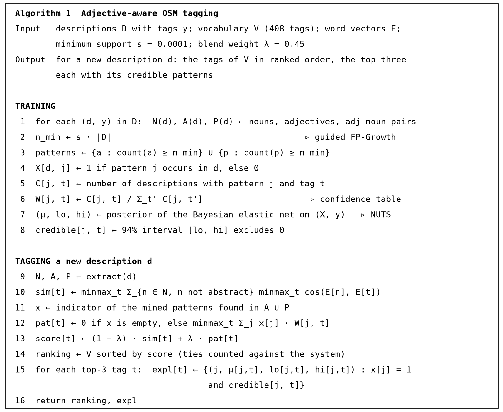

Adjectives tell you what a place is.
“A quiet spot with good cold coffee” never says cafe. This thesis ranks 408 OpenStreetMap place tags from a description like that, and shows that mining the adjectives, which the base method throws away, roughly doubles the hit rate: the right tag is among the top three for 35.7% of 8,876 held-out descriptions, against 17.5% for nouns alone.
TAG RECEIPT
408 tags ranked
noun similaritypattern tableselect a tag
Three methods, one vocabulary, same splits
M1 is the base method of Yousaf et al. (2023): context nouns and Word2Vec similarity. M2 is the control: every adjective is simply added to the similarity query. M3 is this work: mined adjective patterns, scored by confidence, blended with noun similarity. Every setting was fixed on a development set before the test split was opened.
M1 base method, nouns onlyM2 adjectives added to the queryM3 this work
| Set | n | Method | Hits@1 | Hits@3 | Hits@5 | nDCG@20 |
|---|---|---|---|---|---|---|
| OSM test | 8,876 | M1 base method (nouns) | 0.077 | 0.175 | 0.238 | 0.220 |
| OSM test | 8,876 | M2 adjectives in the query | 0.072 | 0.161 | 0.224 | 0.209 |
| OSM test | 8,876 | M3 this work | 0.214 | 0.357 | 0.428 | 0.386 |
| Base-paper set | 106 | M1 base method (nouns) | 0.104 | 0.236 | 0.340 | 0.318 |
| Base-paper set | 106 | M2 adjectives in the query | 0.047 | 0.151 | 0.264 | 0.259 |
| Base-paper set | 106 | M3 this work | 0.255 | 0.415 | 0.547 | 0.487 |
| Pakistan set | 528 | M1 base method (nouns) | 0.116 | 0.286 | 0.386 | 0.336 |
| Pakistan set | 528 | M2 adjectives in the query | 0.095 | 0.244 | 0.371 | 0.319 |
| Pakistan set | 528 | M3 this work | 0.326 | 0.509 | 0.585 | 0.532 |
| M3 against M1, Hits@3 | Difference | p, Holm corrected |
|---|---|---|
| OpenStreetMap test set | +0.182 | < 0.0001 |
| Base-paper sentences | +0.179 | 0.007 |
| Pakistan set | +0.223 | < 0.0001 |
The mined table carries the gain
Each step adds one thing to the base method, Hits@3 on three sets. Pasting adjectives into the query makes things worse, since words like “cold” or “free” sit near no tag name. Counting which adjectives co-occur with which tag in real descriptions is what moves the number: +0.150 on the development set from the table alone (step A3 against the A2 control).
A0 Base method, abstract nouns kept
A1 + abstract-noun removal
A2 + adjectives added to the query (control)
A3 abstract removal + adjective-pattern table
A4 + adjective-noun pair patterns
A5 with Numberbatch (final configuration)
OSM development setBase-paper sentencesPakistan set
On Pakistani places: 0.286 to 0.509
528 descriptions of Pakistani places over 37 tags, written after the protocol was fixed, so this result is post hoc. The pooled gain is real (+0.223, Holm p < 0.0001), but it is not a gain for every kind of place: this work is ahead on 13 of the 37 tags, behind on 13 and level on 11. It loses where a tag has no training text or where the nouns already said it.
M1 base methodM3 this workHits@3 per tag, number of descriptions in brackets, ordered by the difference
Try the tagger yourself
The place tagger is the thesis model behind a small web page. Type a description without naming the place, and it ranks all 408 tags and shows which adjectives pushed each one up and how sure the model is. It is invitation-only because it runs on the author's own laptop, which can serve only a handful of people at once. Ask for a code on the page and it is sent back to you. If the page does not load, the laptop is off: the receipt at the top of this page runs the same ranking on fixed examples.
Two checks on the machinery
The thesis title names two methods. Both are tested here, and one result is not the one the title suggests.
Guided FP-Growth finds the same patterns, faster
746×
Guided mining took 3.22 s on the full 71,784 transactions; extended FP-Growth took 2,403 s and 1,835 MB. Their pattern-to-tag itemsets were identical at all 5 corpus sizes tested, from 5,000 to 71,784.
The check ran at minimum support 0.0005, not at the 0.0001 the pipeline uses; at 0.0001 the extended algorithm does not finish. The thesis states this.
The Bayesian elastic net explains; it does not rank
−0.075
Used as the ranker, the Bayesian elastic net lowers Hits@3 on the test set by 0.075. Only 0.04% of its coefficients are credible, and 286 of 2,916 patterns have a credible tag. So the confidence table ranks and the Bayesian fit supplies the intervals behind each explanation: a credible pattern backs the top tag for 32.0% (development), 44.3% (base paper) and 52.8% (Pakistan) of descriptions.
Confidence table 0.365Frequentist elastic net 0.343Bayesian elastic net, full size only 0.290
Urdu and Roman Urdu, through translation
Urdu and Roman Urdu input is translated to English first, then ranked. The figures measure the pipeline behind a translation step, not native Urdu understanding. Everything here is Hits@3 and post hoc. M3 stays ahead of M1 in every variant.
| Input | Method | n | English original | After translation | Change |
|---|---|---|---|---|---|
| Urdu (author-written), 157 rows | M1 base method (nouns) | 157 | 0.331 | 0.287 | -0.045 |
| Urdu (author-written), 157 rows | M3 this work | 157 | 0.490 | 0.471 | -0.019 |
| Roman Urdu, 300 rows | M1 base method (nouns) | 300 | 0.287 | 0.283 | -0.003 |
| Roman Urdu, 300 rows | M3 this work | 300 | 0.473 | 0.443 | -0.030 |
| Roman Urdu written by the author, 60 rows | M1 base method (nouns) | 60 | 0.400 | 0.350 | -0.050 |
| Roman Urdu written by the author, 60 rows | M3 this work | 60 | 0.717 | 0.583 | -0.133 |
| Roman Urdu drafted from English and checked, 240 rows | M1 base method (nouns) | 240 | 0.258 | 0.267 | +0.008 |
| Roman Urdu drafted from English and checked, 240 rows | M3 this work | 240 | 0.412 | 0.408 | -0.004 |
A second vocabulary says the same
An earlier full run used the base paper’s 227-tag list. The direction and size of the gain agree with the final 408-tag run.
| Set | Earlier n | Earlier base | Earlier pipeline | Earlier gain | Final n | Final base (M1) | Final pipeline (M3) | Final gain |
|---|---|---|---|---|---|---|---|---|
| OSM test | 7,017 | 0.189 | 0.380 | +0.191 | 8,876 | 0.175 | 0.357 | +0.182 |
| Base-paper sentences | 106 | 0.434 | 0.547 | +0.113 | 106 | 0.236 | 0.415 | +0.179 |
| Pakistan set (528) | 528 | 0.381 | 0.545 | +0.165 | 528 | 0.286 | 0.509 | +0.223 |
How a description becomes a ranking
The confidence table ranks the tags; the Bayesian elastic net, fitted on the same patterns, supplies the credible intervals that explain a prediction.
- ExtractA transformer dependency parser reads the description and returns context nouns, adjectives and adjective-noun pairs.
- MineGuided FP-Growth on 71,784 training descriptions, minimum support 0.0001, gives 2,916 patterns: 1,393 adjectives and 1,523 pairs.
- WeighEach pattern gets a confidence for each tag: of the descriptions that contain it, the share that carry the tag.
- Blendscore = (1 − λ) × noun similarity + λ × pattern score, with λ = 0.45 for Numberbatch, chosen on the development set.
- RankAll 408 tags are sorted by score. The top three become three queries against OpenStreetMap.

What this does not show
The weak points are part of the result, so they are here too.
- The Pakistan result is post hoc. The OpenStreetMap test set and the base-paper sentences were fixed in advance; the Pakistan set was completed afterwards. Its second round has one main annotator and drafted rewordings.
- The gain is uneven. Hotel and restaurant carry much of the Pakistan result. Tags with no training text, such as shrine, lake and hill, are ranked by noun similarity alone and lose.
- Explanation is partial and costs accuracy. A credible pattern backs the top tag for roughly a third to a half of descriptions. Ranking with the Bayesian table would make every explanation exact at a cost of 0.075 Hits@3.
- The table is still learning. Both curves rise at the full training size, and the best minimum support sat at the edge of its grid.
- Translation front end. Urdu and Roman Urdu are translated before ranking. There is no native Urdu model.
- No user study and no language-model comparison. The thesis shows explanations exist and read sensibly; it does not test whether they help people.